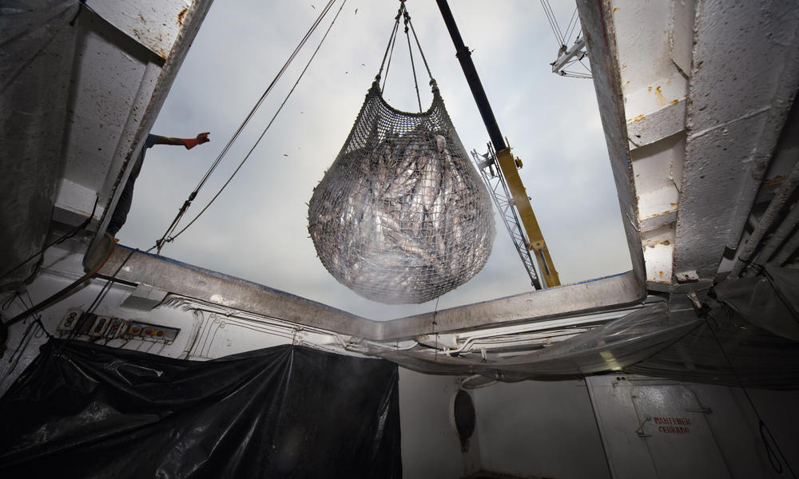
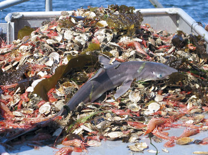

Overfishing is a plague that destroys the balance of life in aquatic bodies, but what is it really? Overfishing, according to the WWF, is when fishermen or fishing vessels keep on fishing and fishing to the point that the sea life cannot multiply enough to replenish its aquatic bodies. This is usually caused when a few companies or individuals get a bit too greedy and want to export as much fish as possible for money, and the Food and Agriculture Organization of the United Nations says that “the number of overfished stocks has tripled in half a century, and today fully 75% of the world’s assessed fisheries are being pushed beyond their biological limits.” This ultimately leads to extreme negative effects on its ecosystems.
Due to overfishing, the fish population decreases drastically. This obviously destroys the balance of these aquatic bodies, as the roles of the caught fish become non-existent, and the food-web gets broke, further lessening the aquatic life in said bodies. This in turn, as well as the way that most fishing vessels use their boats and nets also destroys most of the habitat that these aquatic lives live in, which continues and increases in severity to the point that there is little to no life left in the aquatic bodies.

Another effect of overfishing is bycatch, which is the catching of unwanted aquatic species when fishermen use large nets to catch as many fish as possible for the maximum profit. Usually, bycatch includes some endangered or unprofitable species, which are usually discarded into the shore or seas after caught. This causes unwanted casualties and decreases aquatic life. According to Oceans for Fun, “one out of every four fish caught is discarded, dead or dying, as bycatch.”
Overfishing can also create devastating effects on our communities and economies. Millions upon Millions of people (specifically in the ASEAN Region), rely on catching fish as their livelihood. That means that if these fishermen keep on overfishing, it will come to a point where these fish will be unable to reproduce, which can leave said fishermen into the loss of their livelihoods and means of income. This will also destroy the multi-billion fishing industry, as fish is one of the most highly traded foods of the world (According to WWF).

Look no further than the Philippines, the “epicenter of marine biodiversity”, which ranks as one of the leading fishing nations of the world, with an annual income of over 3 Billion Dollars, according to Oceana. Now, researchers from the Bureau of Fisheries and Aquatic Resources say that at least 10 out of 13 or 75% of the Philippines’ fisheries have been overfished, often due to illegal, unregulated and unreported fishing by large fishing companies. This heavily affects the Philippines’ biodiversity, as the fish population has been declining, and only 1% of all the coral reefs of the Philippines are in good condition as a result of overfishing.
So, what can we do about it? Well, big corporations like Google have taken a stand against this, teaming up with other corporations to create the Global Fishing Watch Project, which tracks fishing activity across the world. The Food and Agriculture Organization of the United Nations has started to place more emphasis on overfishing and is campaigning for the lessening of this practice and the revival of the once numerous species of our aquatic bodies. One sustainable solution that we individuals can achieve is to be informed about the state of our waters and to enforce our mega-corporations to lessen down on overfishing and implement limits. We could also use nets that do not gather up bycatch, as it will increase the survival of these species. This would include using nets with holes that are big enough for the species of fish that are being captured. Lastly, scientists could create a robot that senses whether the fish they interact with is what they want to capture or not, thereby segregating the intended fish and the bycatch.
Aquatic life is being ravaged due to the greediness of people who overfish, so what are you going to do about it?